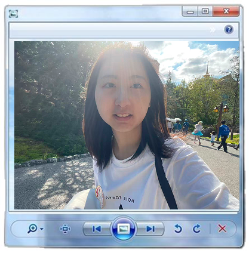
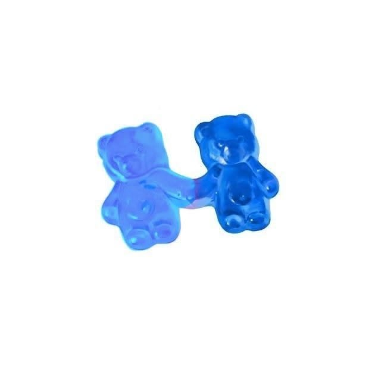
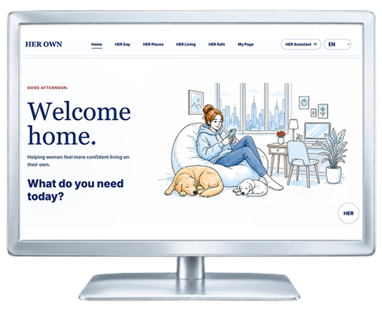
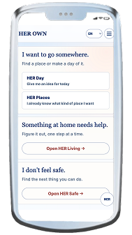
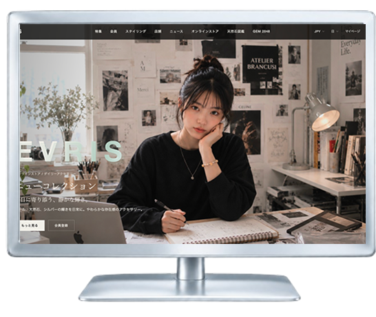
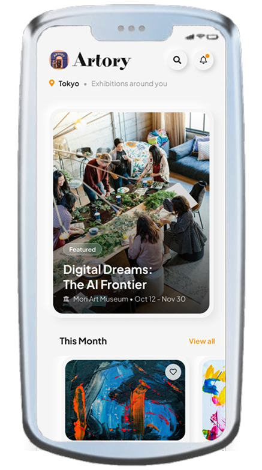
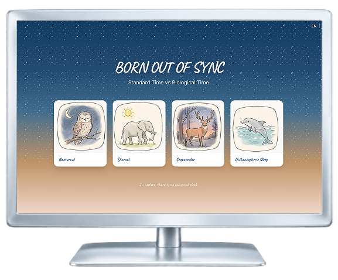

Education
2025 – Present · Tokyo, Japan
HAL Tokyo · Web Design
2018 – 2022 · Wuhan, China
Huazhong Agricultural University
Resources & Environmental Science
XIAO XINYANG · DESIGN + CODE
01 / GET TO KNOW ME


DESIGN + CODE
I'm Xinyang, a Web Design student based in Tokyo. I design and build digital experiences across UX/UI, frontend development, and data storytelling. I'm especially interested in turning everyday questions and complex information into experiences that feel clear, thoughtful, and human.
2025 – Present · Tokyo, Japan
HAL Tokyo · Web Design
2018 – 2022 · Wuhan, China
Huazhong Agricultural University
Resources & Environmental Science
Design
UX/UI Design
Wireframing
Prototyping
Development
HTML/CSS · JavaScript
React · PHP/Laravel
Data
D3.js · Data Visualization
02 / A FEW FAVOURITES
UX/UI · WEBSITE
A digital companion for feeling safer, more capable, and at home on your own.
View Project ↗


GROUP PROJECT · JEWELRY E-COMMERCE
A group project for a jewelry e-commerce website, designed to showcase a curated collection of accessories.
View Project ↗UX/UI · MOBILE APP
Discover. Reflect. Connect. Making exhibition experiences last beyond the moment.
View Project ↗

DATA STORYTELLING · WEBSITE
An interactive exploration of biological rhythms and social time.
View Project ↗03 / MORE TO EXPLORE
A visually focused bakery website exploring layout, typography, and color balance. An exercise in making the everyday feel warm and inviting.
Web design · UI composition
Visit Website ↗A collaborative exploration of Shinjuku through color. I contributed game design, concept development, and the curation of color-based visual assets.
Group project · Game & concept design
Visit Website ↗A D3.js visualization showing how competition stages narrow the field to a final champion. A concentric-circle layout makes the progression visible.
Data visualization · D3.js
Visit Website ↗A React self-study project adapting an existing café template. An exploration of component structure and frontend workflow through a familiar daily ritual.
Frontend · React · Template adaptation
Visit Website ↗